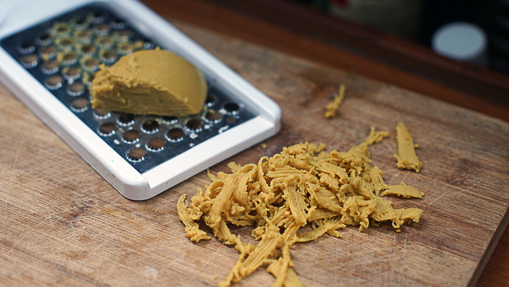
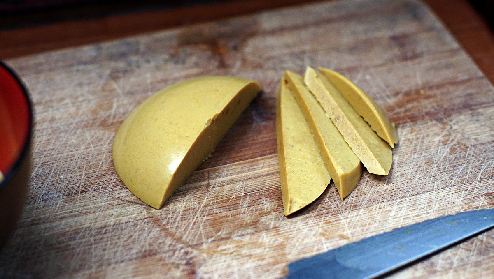

cheese
2 servings — 60 minutes
I used to have a cheese recipe on this website, but it failed me a few times after making it, which made it a poor recipe indeed. This time, I've experiemented a lot more, removing and adding ingredients.
This is a basic cheese recipe, that you can add onto if you want different flavors. It's simple to prepare, and ready under an hour. Another great thing about it is that it's completely nut-free!
This cheese can be grated, it holds its shape well enough so it can be used as a topping on pizza — yay!
In this recipe I use kanten, which is similar to agar agar except that it's made from a different type of red algae (tengusa). It can be swapped 1:1 in a recipe, although the resulting texture will not be the same. Adding agar agar will make the cheese softer, so I highly recommend using kanten if available.

Flavors
For a pepper jack cheese flavor, add garlic, onion powder and chili pepper flakes. You can also add black pepper, for a bit of spice, or pimento olives!
 soy milk 240 ml
soy milk 240 ml nutritional yeast 50 ml
nutritional yeast 50 ml tahini 30 ml
tahini 30 ml onion powder 2.5 ml
onion powder 2.5 ml apple cider vinegar 5 ml
apple cider vinegar 5 ml white miso 5 ml
white miso 5 ml kanten powder 4 g
kanten powder 4 g
cheese
- In a bowl, mix 60 ml (1/4 cup) of soy milk, 50 ml (1/4 cup) of nutritional yeast, 30 ml (2 tbsp) of tahini, 2.5 ml (1/2 tsp) of onion powder, 5 ml (1 tsp) of apple cider vinegar and 5 ml (1 tsp) of white miso.
- Heat a saucepan at medium heat, pour 180 ml (3/4 cup) of soy milk and sprinkle 4 g of kanten powder. Stir kanten powder into the milk.
- When content starts to boil, lower to a simmer and add the bowl of mixed ingredients into it. Stir, for a minute or two and then pour contents of pan into two small bowls. The reason I use two instead of one, is because the cheese will harden quicker.
- Let mixture rest for 1 hour or so, 2 is better (especially if it's hot where you are).
- Flip bowls upside down, scoop out cheese and enjoy! This cheese can be grated onto pizza too!